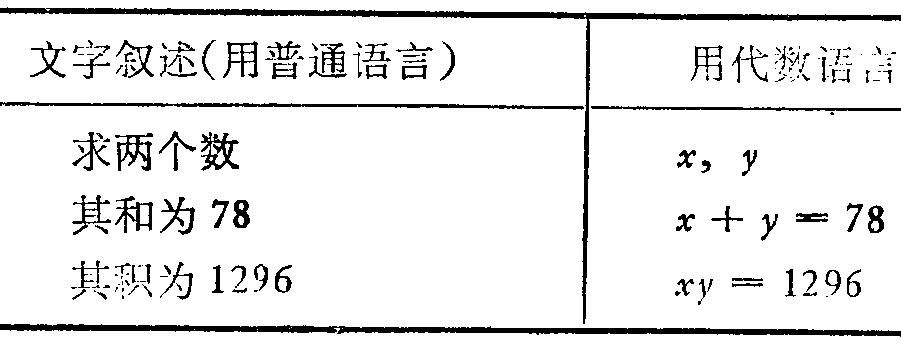
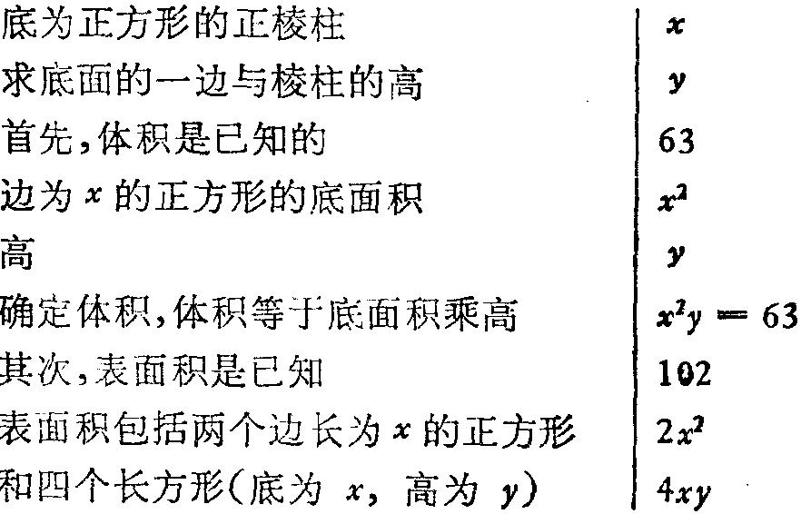

在本例中，文字叙述几乎自动地分成几个相互衔接的部分，每个部分可直
接用数学符号表示出来。
(3) 求底面为正方形的正棱柱的宽与高，已知其体积为63英寸 3 ，表面积为
102 英寸 2 。
未知数是什么?底的一边，设为x。棱柱的高，设为y。
已知数是什么?体积63，面积 102 。
条件是什么?底为正方形的棱柱，边长为x，高为y，体积须为63，面积须为
102 。
把条件的各部分分开。这里有两部分，一部分与体积有关，另一部分与面
积有关。
我们可以几乎毫不犹豫地把整个条件正好分成上述两部分；但我们却不能
“直接”把这两部分写出来。我们需要知道如何计算体积和各部分面积。但是，
如果我们多懂一点儿几何学，我们不准把此条件的两部分加以重新叙述，使得
译成方程式一事成为切实可行。下面我们在直线左侧所写下的问题基本上经过
重新排列并加了解释以便译成代数语言。
(4) 已知一直线方程及一点的座标，求一点与已知点对称于已知直线。
这是一个平面几何问题。
未知是什么?一点，其座标设为p，q。
已知是什么?直线方程，设为 y=mx+n ；一点，其座标设为a，b。
条件是什么?点(a，b)与(p，q)，彼此对称于直线 y=mx+n 。
我们现在碰上了基本的困难，即把条件分为几部分，而每一部分都可用解